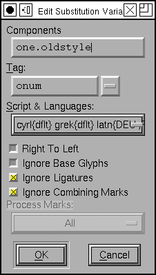
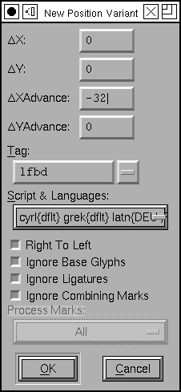
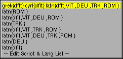
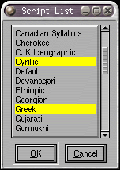
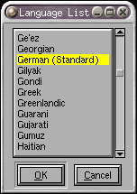

グリフ情報
 グリフ情報
グリフ情報
- エンコーディングと Unicode 情報
- グリフコメント
- 単純グリフ位置指定(GPOS)
- カーニング以外のペア単位位置指定 (GPOS)
- 単純グリフ置換 (GSUB, morx)
- 選択型グリフ置換 (GSUB)
- 複数グリフへの置換 (GSUB)
- 合字グリフ置換 (GSUB, morx)
- 構成要素
- カウンタマスク
このダイアログでは、既存のグリフの名前とUnicodeの符号位置を設定できます。グリフ名が決まっている場合、([名前で指定(A)] ボタンを押せば) FontForge に符号位置を決めさせることができます。同様に、エンコーディングが分かっていれば、FontForge に名前を決めさせることができます。
Unicode名(N) フィールドは、この Unicode コードポイントの名前に対する (おそらく) いくつかの同義な名前を列挙したプルダウンリストからなります。
OTFグリフクラス(G) フィールドは OpenType の‘GDEF’テーブルのためのものです。通常は、自動設定のままにしておいてかまいません。その場合、FontForge はクラスを推測し、GDEF にそれを出力する必要があるかどうかを判断します。FontForge が何を行うかについては、表示(V)→ATTを表示(S)で調べることができます。
 グリフに対して、任意の (Unicode の) コメントをつけることができます。単純にこのフィールドで任意のテキストをタイプしてください。コメントはあなたのためのもので、出力されるフォントには含まれません。また、フォントビューの中で目立って見えるようにグリフに色を割り当てることもできます。
グリフに対して、任意の (Unicode の) コメントをつけることができます。単純にこのフィールドで任意のテキストをタイプしてください。コメントはあなたのためのもので、出力されるフォントには含まれません。また、フォントビューの中で目立って見えるようにグリフに色を割り当てることもできます。
 GPOS および GSUBテーブルの機能の編集を補助するための、6 個に分かれたサブダイアログがあります (これらのテーブルのデータの一部は、各種の Apple の AAT テーブル——とくに‘morx’——に変換することができます)。これらのダイアログのうち第一のものは、GPOS テーブル内の機能と、グリフのメトリックへの何らかの変更を対応づけることができる位置変更ダイアログです。
GPOS および GSUBテーブルの機能の編集を補助するための、6 個に分かれたサブダイアログがあります (これらのテーブルのデータの一部は、各種の Apple の AAT テーブル——とくに‘morx’——に変換することができます)。これらのダイアログのうち第一のものは、GPOS テーブル内の機能と、グリフのメトリックへの何らかの変更を対応づけることができる位置変更ダイアログです。
右の例では‘fwid’(全角) 機能でグリフの送り幅を 400 ユニット増やすとともに、200 ユニット水平に移動しています。
リストへの新しい項目は、[新規(N)...] ボタンを押して作成することができ、編集可能なメトリックの値が各フィールドに含まれたダイアログがポップアップします。その他には機能タグのためのフィールドと、フラグを示す一揃いのチェックボックスが含まれています (これらのフラグはここでは意味がありませんが、愚直な完全さを実践するために含まれています)。
[削除(D)] および [編集(E)...] ボタンはその名の通りの操作を行います。[コピー(C)] および [貼り付け(P)] も予想通りにふるまいます。ここで何かをコピーしてから、それをフォントビューへ貼りつけることもできます (同じ位置情報を、大きなグリフのブロックに適用したい場合に使えます)。
ペア単位の位置指定サブダイアログでは、2 個のグリフが決まった順番で表れたときの位置を変更することができます。最も一般的な例はカーニングです (もっと変更しやすい方法が、例えばメトリックビューなどでありますが、それを本当にやりたい場合はここで行うこともできます。
 単純置換 (
単純置換 ([置換]) は 1 個のグリフを他のグリフと置き換えます。ここではグリフ“one”に、‘sups’(上つき文字) 機能が起動されたときに“onesuperior”になる置換が設定されています。
FontForge は、その機能があるスクリプト/言語で必須であることを示すための特別な機能タグ‘ RQD’を認識します。このような機能は常に適用されます。
置換を作成する最も簡単な方法は、フォントビューからグリフをドラッグしてここでドロップすることです (その時、その置換テーブルの機能タグを入力するように促されます。
[複数の置換先] および [選択型置換] サブダイアログもそれと似ていますが、これらは複数のグリフ名をとることができる点が異なります。[複数の置換先] サブテーブルでは各グリフはいくつかの他のグリフによって置き換えられ (ある意味、合字の反対です)、[選択型の置換] サブダイアログでは、各グリフはリスト内に含まれるちょうど 1 個の文字によって置き換えられ、どのグリフを使うかについてはユーザが選ぶことができます。

[合字] フィールドでは、FontForge が現在のグリフがいくつかの他のグリフから合成されたグリフであることを FontForge に知らせることができます。FontForge はこのとき右側のデフォルトグリフを補完することがしばしばうまくできますが、時には変更してやる必要が生じます。この値は、空白で区切られた PostScript グリフ名のリストでなければなりません。あるグリフが 2 つの異なる合字であると見なされるときには、それらを両方とも、別々の行に指定しなければなりません。例えば“ffi”は“f”“f”および“i”の合字と見ることもできますし、“ff”と“i”の合字とも見なせます。
右の例では文字“m” は GSUB テーブルに格納されたフラグのセットの 1 つです。これは、合字を検索するときには結合マークを無視する必要があることを表します。
GPOS および GSUB テーブルでは、合字の更なる改良が可能です。合字は、標準・必須・任意・歴史的または分数のいずれかに分類することができます。必須の合字は常に置き換えられなければならず、標準合字は置き換えるべき物で、任意使用の合字は置き換えてもよいもので、歴史的合字は適切な状況でのみ用いるべきものです。タグフィールドのプルダウンリストでは、この合字がどのタイプであるかを選択することができます。
 アジアの複雑なグリフでは、PostScript はステムの間のカウンタを制御するメカニズムを提供しています。それらはカウンタマスクヒントと呼ばれます。
アジアの複雑なグリフでは、PostScript はステムの間のカウンタを制御するメカニズムを提供しています。それらはカウンタマスクヒントと呼ばれます。 ラテン文字・キリル文字・ギリシャ文字のフォントではカウンタマスクを使用することができる文字は“m”など、非常に限られており、使用できる状況も非常に限られています。カウンタマスクに関する説明を参照してください。
ラテン文字・キリル文字・ギリシャ文字のフォントではカウンタマスクを使用することができる文字は“m”など、非常に限られており、使用できる状況も非常に限られています。カウンタマスクに関する説明を参照してください。
いくつかのグリフ (合字、アクセントつきグリフ、ハングル音節文字など) は他のグリフから構築されています (少なくとも Unicode に関して言えば)。ダイアログのこのタブでは、Unicode で現在のグリフを構成することとなる要素を表示します。それらの構成要素がフォントに含まれていれば、FontForge の エレメント(L)→組み立て(U)→アクセントつきグリフを構築(B) コマンドか エレメント(L)→組み立て(U)→複合グリフを構築(C) コマンド を使用して現在のグリフを作成することができます。ここで表示される情報は通知目的のためだけであり、このフィールドを直接変更することは許されていません (これは、そのグリフに割り当てられている Unicode 値またはグリフ名を変更したときに自動的に変更されます)。
[次(N) >] および [< 前(P)] ボタンでは、現在のグリフの前後のグリフに移動することができます (例えば、あるグリフの範囲にエンコーディングを指定したい場合)。
[完了(D)] (または [キャンセル(C)]) ボタンは、現在のグリフでの作業のみを取り消します。もし [次(N) >] または [< 前(P)] ボタンを既に押していたならば、以前に行った変更はキャンセルされません。
機能タグダイアログ
|   |
これらの 2 つのダイアログでは、OTF の機能タグと、それに伴うその他のすべての付属情報を指定することができます。それらは (上記) グリフ情報で置換・位置および合字を指定するのに用いられるだけでなく、フォント情報でアンカークラスや文脈依存の機能を指定するのにも用いられます。
ここでは、OpenType の機能タグ (‘liga’のような 4 文字のタグ——これらは。Microsoft と Adobeによって定義されています。より詳しい情報についてはGPOS と GSUB に関するセクションを参照してください) か、Apple の機能/設定値 (例えば <2,2> のような形で、ここで最初の数値が機能を表し、2 番目がその機能の設定を表します) のどちらかを指定する必要があります。これらの機能は OpenType (または ATSUI) エンジンに、どの置換を行うことを想定しているかを教えます。
警告: OpenType エンジンは、現在の用字系において適正であると判断した時にかぎり、機能を適用します (ラテン文字では、Uniscribe は‘ccmp’および‘liga’(文字合成/分解および合字) 機能を適用しますが、‘medi’(語中形の異体字への置換) は適用しません。なぜなら、ラテン文字にはそのような機能は不要である——少なくとも彼らはそう考えている——からです)。さらに悪いことに、いくつかのアプリケーションはおそらく一切の機能を適用しないことを選んでいます (Word はラテン文字の合字処理を行いません)。 Microsoft は、Uniscribe においてどのスクリプトにどの機能を適用するかを文書化しようとしていますが、Word および Office はデフォルトと全く異なる振舞いをするため、これはほとんど参考になりません。
それに加えて、機能のふるまいを制御するための一組のフラグを指定する必要があります。その機能が右から左に書くテキストで使用される場合、「右から左へ」フラグを指定してください。もし、(アクセントの類の) マークグリフが中間に入るならば「結合型マークを無視する」を選択してください。インド系文字のフォントを作成している場合、おそらく (エレメント(L)→フォント情報(F)...→[マーククラス] で) マーククラスを作成し、インド系の再配置を指定するために「マークを処理」オプションを有効にしてそれを使用する必要があるでしょう。
それと、置換が有効になる用字系・言語の集まりがあります。上に示す例では、置換はギリシャ文字とデフォルト言語 (これは、特別な扱いをするように選ばれていないすべての言語を意味します)、キリル文字とデフォルト言語、そしてラテン文字といくつかの言語の組合せで有効になっています。

プルダウンリストをクリックすると、現在フォントで使用されている選択肢のリストが表れます。最後の選択肢を選ぶと、このリストの変更や追加が行えます。
ほとんどの場合、あなたが作成した項目が有効になるのは 1 個の用字系だけで、ただしその用字系を使用するすべての言語に指定したいと思うはずです。例えば“fl”合字は、言語が何であれラテン文字ではおそらく常に有効にするべきでしょう (ただし、トルコ語だけは別で、合字を明示的に禁止する必要があるでしょう)。しかしながらキリル文字の利用者はこの文字の組合せに出会うことがまったくないので、有効にしても意味がありません。その一方、エスツェット合字 (ドイツ語の二重 s, ß) はドイツ語以外のすべての言語に含まれていない (と思います) ので、合字はラテンスクリプトのドイツ語のみで有効とするべきでしょう。
また、単独のスクリプトに限定されれないグリフがいくつか存在します。同じ数字がラテン・キリル・ギリシャ・ヘブライ (ときにはアラビアも) およびその他多数の書字システムで使用されるため、すべての数字合字 (分数など) はすべての書字システムで利用可能にしておくべきです。
FontForgeが使用する用字系の名称は、Microsoft と Adobe が OpenType のために規定したものです。これらは ISO 15924 とほとんど互換ですが、OpenType では用字系の名前はすべて小文字になっている (それに対し、ISO 15924 では先頭文字はすべて大文字です) ことと、短い用字系の名前 (例えば“Lao”) が‘Laoo’ではなく‘lao ’になっていることです。私は、ISO 15924 で規定された名前を小文字に変換することにより、OpenType の用字系セットを大幅に拡張しました。(ISO 15924 には私から見て 1 個のスクリプトの変種としか思われないものを含んでいるため、すべてを取り込んだわけではありません (例えば、フラクトゥールは独立した用字系タグをもっていますが、私はラテン文字にすぎないと思います))。
用字系・言語ダイアログ
 このダイアログは、現在のフォントで使用されているすべての用字系と言語の組合せを表示します。ボタンを押して、新しい組合せを追加したり既存の組合せを変更したりすることができます。
このダイアログは、現在のフォントで使用されているすべての用字系と言語の組合せを表示します。ボタンを押して、新しい組合せを追加したり既存の組合せを変更したりすることができます。
FontForge が知らない用字系または言語を指定したい場合は、[新規(N)...] または [編集(E)] ボタンを押す前に Control キーを押下してください。何でも自由に入力できる解析されないダイアログが表れます。(OpenType にはデフォルト言語を表すタグはありません (それはタグには関係ない特別なデータ表現をもっています) が、一貫性を保つために、タグ‘dflt’が割り当てられています。‘dflt’タグは出力フォントには表れず、その代りにそれらはデフォルト言語の適切な表現に変換されます)。
FontForge で使用される言語名は、Microsoft と Adobe により OpenType のために規定されたものです。
注意: ほとんどの場合、リスト内の用字系の順番には意味がありませんが、カーニングの場合は、カーニングペアの方向を決定するのに最初の文字の用字系を使用します。そのため、数字にカーニングを設定して、それをラテン文字とヘブライ文字の両方で有効にしたい場合は、用字系の出現順を自分で決めることができる、解析されないダイアログを使用する (かまたは、ギリシャ文字かキリル文字 (アルファベット順で‘hebrew’より先に来る、左から右に表記する何らかの用字系) をリストに追加する) 必要があります。
用字系ダイアログ
このダイアログは、この用字系-言語集合において現在有効になっているすべての用字系を一覧表示します。集合に新しい用字系を追加したい場合、Control キーを押しながら用字系の名前をクリックしてください。新しい用字系は“デフォルト”言語との組合せで選択されます。言語に対するより詳細な制御を行いたい場合 (例えば、デフォルト以外の言語を指定したい場合)、用字系の名前の上でダブルクリックすれば言語ダイアログが表示されます。
 言語ダイアログ
これは、現在の用字系/言語集合に含まれる編集中の用字系で有効なすべての言語を表示します。いくつかの言語は指定されたスクリプトでは意味がないでしょう (しかし、どれを削除すればよいか私には分からないので、すべての言語を含めることにしています。余分な情報があることにお詫びします)。複数の言語を選択するには Control キーを使用してください。少なくとも 1 個の言語を指定しなければなりません。
参照: